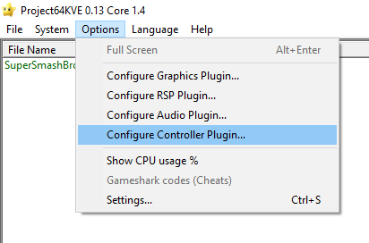

Configurer sa manette sur l'émulateur project64
Pour configurer la manette rien de plus simple, clique sur "Option" puis "Configure Controller Plugin"

Ensuite appuie sur chaque bouton pour les assigner avec la touche que tu souhaites.
voici ce que représente chaque touche
ANALOGIC STICK = Les déplacements
A = Jab/attaque classique
B = Spécial/projectiles
S = Start/pause
L = Taunt
R = Grab
Z = Bouclier
DIGITAL = Touches de saut